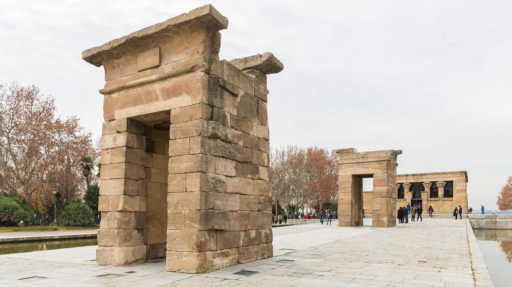

Salvado de un lago
La presa alta de Asuán iba a inundar decenas de monumentos antiguos de Nubia. La UNESCO pidió ayuda, y España fue uno de los países que respondieron.
Construido hace más de 2.200 años junto al Nilo, el Templo de Debod se regaló a España en 1968 por ayudar a salvar los monumentos de Nubia de la presa de Asuán. Se reconstruyó piedra a piedra y se abrió en Madrid en 1972.
Actualizado

El templo lo empezó a principios del siglo II a. C. Adijalamani, rey de Meroe, en Kush, como una pequeña capilla al dios Amón, 15 km al sur de Asuán, junto al Nilo. Los reyes ptolemaicos lo ampliaron y lo dedicaron a Isis de Filé, y los emperadores romanos Augusto y Tiberio lo completaron.
En 1960 la presa alta de Asuán amenazaba con inundar los templos de Nubia, y la UNESCO pidió ayuda internacional. En agradecimiento por el trabajo de España, sobre todo en el salvamento de Abu Simbel, Egipto le regaló este templo en 1968. Se desmontó, se trajo en barco y se reconstruyó en el Parque del Oeste, donde abrió en 1972.
Es uno de los cuatro templos nubios regalados a los países que ayudaron. Los otros son Dendur, en el Museo Metropolitano de Nueva York, Taffeh en Leiden y Ellesiya en Turín. Debod es el único que está al aire libre.
La presa alta de Asuán iba a inundar decenas de monumentos antiguos de Nubia. La UNESCO pidió ayuda, y España fue uno de los países que respondieron.
Egipto agradeció a los que más ayudaron con templos enteros. Debod fue para España; los otros están en Nueva York (Dendur), Turín (Ellesiya) y Leiden (Taffeh).
El templo se reconstruyó mirando de este a oeste, la misma orientación que tenía en Egipto. Su parte más antigua la construyó el rey nubio Adijalamani.
Egipto se lo regaló a España en 1968 para agradecer su ayuda en el salvamento de los templos de Nubia, que la presa alta de Asuán iba a inundar.
Su parte más antigua es de hacia 200–180 a. C., hace más de 2.200 años.
Al atardecer, por la vista hacia la Casa de Campo y el reflejo del templo en el estanque.
Lo empezó Adijalamani, rey kushita de Meroe, a principios del siglo II a. C., y lo ampliaron los reyes ptolemaicos y los emperadores Augusto y Tiberio.
Sí. Estuvo al sur de Asuán más de 2.000 años antes de trasladarse piedra a piedra a Madrid entre 1970 y 1972.
Palacio de Cristal · Plaza Mayor · Plaza de Cibeles · Prado Museum · Puerta de Alcalá · Puerta del Sol
Audioguía de MadridTodos los lugares de Madrid, con la historia que la app te cuenta allí.